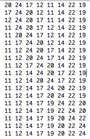
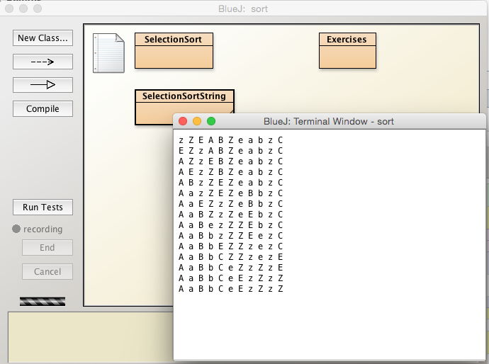
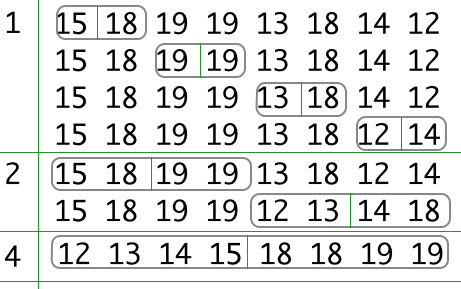

Objectives
These are the solutions to the sorting and searching exercises.
Exercises
Exercise 1 (Selection sort)
Write out the varying sequence of arrays from the original unsorted to the final sorted arrangement for the following array that we have already encountered:
Unsorted: {20, 24, 17, 12, 11, 14, 22, 19}
Sorted : {11, 12, 14, 17, 19, 20, 22, 24}For example, the first change occurs when 20 is exchanged with 17 resulting in the following array:
Partially sorted : {17, 24, 20, 12, 11, 14, 22, 19}Exercise 1 solution:

Exercise 2 (Selection sort)
Use a print method or otherwise to programatically display the varying sequence of arrays from the original unsorted to the final sorted arrangement for the following array that we have already encountered:
Unsorted: {20, 24, 17, 12, 11, 14, 22, 19}
Sorted : {11, 12, 14, 17, 19, 20, 22, 24}Exercise 2 solution:
Copy the content of SelectionSort to a new class named Exercises.
- Reason: for test purposes.
Add a print statement to the sort method as shown in Figure 2, ensuring you provide a pair of {}:
public static void sort(int[] a)
{
for (int i = 0; i < a.length; i += 1)
for (int j = i; j < a.length; j += 1)
if (a[j] < a[i])
{
exchange(a, i, j);
print(a);
}
}The output, which should be the same as that in Exercise 1, is also shown in Figure 2.

Exercise 3 (Selection sort)
Write a Selection sort algorithm to sort an array of String objects.
Use the method String.compareToIgnoreCase when comparing String objects.
Test your code with this array:
String[] s = {"z", "Z", "E", "A", "B", "Z", "e", "a", "b", "z", "C"};Exercise 3 solution:
Add a new class named SelectionSortString to the Sorting project.
public class SelectionSortString
{
public static void sort(String[] a)
{
for (int i = 0; i < a.length; i += 1)
for (int j = i; j < a.length; j += 1)
if (a[i].compareToIgnoreCase(a[j]) > 0)
{
exchange(a, i, j);
print(a);
}
}
private static void exchange(String[] a, int i, int j)
{
String val = a[i];
a[i] = a[j];
a[j] = val;
}
public static void print(String[] a)
{
for (String val : a)
System.out.print(val + " ");
System.out.println();
}
public static void test()
{
String[] s = {"z", "Z", "E", "A", "B", "Z", "e", "a", "b", "z", "C"};
print(s);
sort(s);
print(s);
}
}The output on invoking test() is shown in Figure 3:

Exercises
Exercise 4 (Merge sort)
Manually use the Merge sort algorithm to sort the following array:
{18, 15, 19, 19, 13, 18, 14, 12}Write out the array as it would exist following each call to the merge method.
For example here is the array following the first invocation of merge:
15 18 19 19 13 18 14 12
Identify the blocks being merged at each invocation of merge.
The solution comprises 7 sets of arrays including the original unsorted and the final sorted versions.
Exercise 4 (Merge sort) Solution
Solution shown here in Figure 1:

Exercises
Exercise 5
5.1 Write two versions of a binary search algorithm to sort an array of strings:
- Case sensitive
- Ignoring case
5.2 Test the algorithms:
- use the array of strings provided
- sort this array in ascending order using an algorithm you will already have developed
- search for a specific string using binary search.
- verify both versions of binary search function correctly.
Here is the string to be searched for and the array of strings, the search space:
String sought = "able";
String[] target = {"Able", "was", "I", "ere", "I", "saw", "Elba", "How original!"};Exercise 5 Solution (Version 1)
/**
* Search a list of strings stored as an array for a particular string
* @param a The sorted array of strings - the search space.
* @param sought The string being searched for.
* @return The position index of the string being sought if it exists. If it does not exist -1 is returned.
*/
public static int binarySearch(String[] a, String sought)
{
int lo = 0;
int hi = a.length - 1;
int mid;
while (lo <= hi)
{
mid = (lo + hi) / 2;
if (compareTo(sought, a[mid]) < 0)
hi = mid - 1;
else if (compareTo(sought, a[mid]) > 0)
lo = mid + 1;
else // sought == a[mid]: found match
return mid;
}
return -1; //failed to find sought match
}
private static int compareTo(String s1, String s2)
{
return s1.compareTo(s2);
}Exercise 5 Solution (Version 2)
/**
* Search a list of strings stored as an array for a particular string
* @param a The sorted array of strings - the search space.
* @param sought The string being searched for.
* @return The position index of the string being sought if it exists. If it does not exist -1 is returned.
*/
public static int binarySearchIgnoreCase(String[] a, String sought)
{
int lo = 0;
int hi = a.length - 1;
int mid;
while (lo <= hi)
{
mid = (lo + hi) / 2;
if (compareToIgnoreCase(sought, a[mid]) < 0)
hi = mid - 1;
else if (compareToIgnoreCase(sought, a[mid]) > 0)
lo = mid + 1;
else // sought == a[mid]: found match
return mid;
}
return -1; //failed to find sought match
}
private static int compareToIgnoreCase(String s1, String s2)
{
return s1.compareToIgnoreCase(s2);
}Test method:
public static void test()
{
String sought = "able";
String[] target = {"Able", "was", "I", "ere", "I", "saw", "Elba", "How original!"};
SelectionSort_String.sort(target);
int x = binarySearch(target, sought);
String response = x != -1 ? "found" : "not found";
System.out.println("Value " + searchFor + " " + response);
x = binarySearchIgnoreCase(target, sought);
response = x != -1 ? "found" : "not found";
System.out.println("Value " + searchFor + " " + response);
}